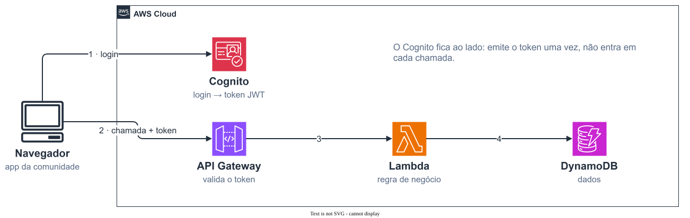
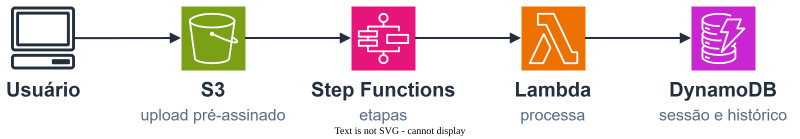
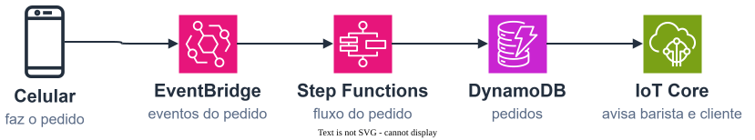

AWS · Serverless · Arquitetura
O que é arquitetura Serverless?
Student Builder Group IMT14 de novembro de 2026
Vitor SollerCloud Architect Engineer @ Dati · 12× AWS Certified


Fargate
AppSync


objetos e estado
filas e notificações
roteamento
workflows
// AWS Lambda
Evento → função → efeito.
Sem servidor ligado esperando.
github.com/Maua-Dev/clean_mss_template

01Abra o site.
02Gere sua moldura.
03Baixe ou compartilhe.
"Qual é o status
do meu trabalho?"
Upload → processamento → resultado.
Uso parcial em produção.

Pedido no celular → café pronto.
EventBridge + Step Functions.
github.com/aws-samples/serverless-coffee

| serviço | você paga por | preço · us-east-1 |
|---|---|---|
| Lambda | requisição + GB × segundo | US$ 0,20 / milhão + US$ 0,0000133 / GB-s (ARM) |
| API Gateway | requisição | US$ 1,00 / milhão (HTTP API) |
| Step Functions | transição de estado | US$ 0,025 / mil |
| DynamoDB | leitura e escrita | US$ 0,625 / milhão escritas |
| S3 | armazenamento + requisição | US$ 0,023 / GB-mês |
| EventBridge | evento publicado | US$ 1,00 / milhão (customizados) |
preços on-demand das páginas oficiais da AWS, consultados em 10/11/2026 · sem Free Tier